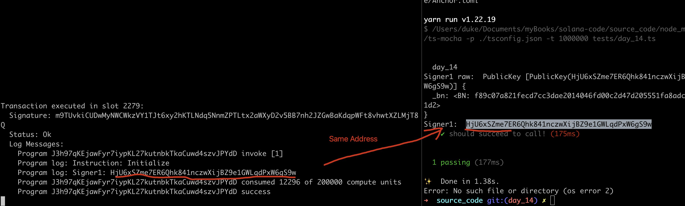

Tx Origin onlyOwner
In Solidity,
msg.sender:represents the address that called or initiated a function call on a smart contract.tx.origin: is the wallet that signed the transaction.
In Solana,
msg.sender: don't have equivalent concept.tx.origin: solana has multiple tx.origins.
Single Signer
anchor new day_14
udpate with following code:
use anchor_lang::prelude::*;
declare_id!("J3h97qKEjawFyr7iypKL27kutnbkTkaCuwd4szvJPYdD");
#[program]
pub mod day_14 {
use super::*;
pub fn single_signer(ctx: Context<Initialize>) -> Result<()> {
let signer1: &mut Signer = &mut ctx.accounts.signer1;
// Your logic here
msg!("Signer1: {:?}", *signer1.key);
Ok(())
}
}
#[derive(Accounts)]
pub struct Initialize<'info> {
#[account(mut)]
pub signer1: Signer<'info>,
}
From the above code snippet, we have attached an signer1 to Initialize and use it within the function.
add test case in day_14.ts
import * as anchor from "@coral-xyz/anchor";
import { Program } from "@coral-xyz/anchor";
import { Day14 } from '../target/types/day_14';
describe("day_14", () => {
anchor.setProvider(anchor.AnchorProvider.env());
const program = anchor.workspace.Day14 as Program<Day14>;
it("should succeed to call!", async () => {
const tx = await program.methods.initialize().accounts(
{
signer1: program.provider.publicKey,
}
).rpc();
console.log('Signer1 raw: ', program.provider.publicKey);
console.log('Signer1: ', program.provider.publicKey.toBase58());
})
})
output:

same to what we log within the code:

Multiple Signers
simply add one more signer, signer2, everything else remains unchange.
use anchor_lang::prelude::*;
declare_id!("J3h97qKEjawFyr7iypKL27kutnbkTkaCuwd4szvJPYdD");
#[program]
pub mod day_14 {
use super::*;
// the previous logic...
pub fn multiple_signer2(ctx: Context<Initialize>) -> Result<()> {
let signer1: &mut Signer = &mut ctx.accounts.signer1;
let signer2: &Signer = &ctx.accounts.signer2;
// Your logic here
msg!("Signer1: {:?}", *signer1.key);
msg!("Signer2: {:?}", *signer2.key);
Ok(())
}
}
#[derive(Accounts)]
pub struct Initialize<'info> {
#[account(mut)]
pub signer1: Signer<'info>,
pub signer2: Signer<'info>, // <<--- add a new signer here!!
}
anchor build and deploy:
anchor build -p day_14
anchor deploy -p day_14
PLS NOTE: if failed, run this command to extend the unit, usually this will resolve your error.
solana program extend J3h97qKEjawFyr7iypKL27kutnbkTkaCuwd4szvJPYdD 2000000
update the testcase, with new test case.
it("should succeed to call multi signer!", async () => {
let newKeypair = anchor.web3.Keypair.generate();
console.log('New keypair: ', newKeypair.publicKey.toBase58());
const tx = await program.methods.multipleSigner2().
accounts({
signer1: program.provider.publicKey,
signer2: newKeypair.publicKey,
}).
signers([newKeypair]).rpc();
console.log('Signer1: ', program.provider.publicKey.toBase58());
console.log('Signer2: ', newKeypair.publicKey.toBase58());
})
key note:
- we pass signer1 with
program.provider.publicKeywhich is our local keypair. - we create a new keypair by anchor build function:
anchor.web3.Keypair.generate();and pass it as signer2 - the default keypair is local keypair, no need to pass in the array:
signers([newKeypair]), that's why there is only one in the arry.
test:

it works as expected, cool!!
OnlyOwner
This is the key feature in solidity, we use it to restrict a function's access to only the owner of the functions.
in Solana, using #[access_control] attribute from Anchor, we can also implement the onlyOwner pattern.
update the code, andd new function restrict_to_owner in mod day_14 and check outside the mod
use anchor_lang::prelude::*;
declare_id!("J3h97qKEjawFyr7iypKL27kutnbkTkaCuwd4szvJPYdD");
// NOTE: Replace with you own address(Public key)
const OWNER: &str = "HjU6xSZme7ER6Qhk841nczwXijBZ9e1GWLqdPxW6gS9w";
#[program]
pub mod day_14 {
use super::*;
// The reset
#[access_control(check(&ctx))]
pub fn restrict_to_owner(ctx: Context<OnlyOwner>) -> Result<()> {
// Your logic here
msg!("Hello, i'm the true king, arise!");
Ok(())
}
}
fn check(ctx: &Context<OnlyOwner>) -> Result<()> {
require_keys_eq!(
ctx.accounts.signer_account.key(),
OWNER.parse::<Pubkey>().unwrap(),
OnlyOwnerError::NotOwner
);
Ok(())
}
#[derive(Accounts)]
pub struct OnlyOwner<'info> {
signer_account: Signer<'info>,
}
#[error_code]
pub enum OnlyOwnerError {
#[msg("Only owner can call this function")]
NotOwner,
}
as you can see, there is a macro #[access_control(check(&ctx))] above function: restrict_to_owner to verify the accessbility, the custom function: check defines the details, it will compare the signer and the OWNER we hardcoded above, and revert with a custom error code if mismatch.
note: require_keys_eq is also a built-in macro by Anchor.
Now we can Test
add two more testcases, happy case and attack case each.
it("should succeed to call by owner!", async () => {
const tx = await program.methods.restrictToOwner().accounts({
signerAccount: program.provider.publicKey,
}).rpc();
})
it("should fail to call by non owner!", async () => {
let newKeypair = anchor.web3.Keypair.generate();
console.log('New keypair: ', newKeypair.publicKey.toBase58());
const tx = await program.methods.restrictToOwner().accounts({
signerAccount: newKeypair.publicKey,
}).signers([newKeypair]).rpc();
})
execute the test code, and get the result as expected.

we can use try-catch to cease the error, can take a refernce to day_04, Error Handler.
Modify The Owner
To cahnge the owner in a program, the pubKey assigned to the owner needs to store on-chain, which we will discuss in the later sessions.
As for now, we can just redeploy(upgrade) the bytecode as shown before.
Key Takeaways
- no msg.sender in solana
- support multiple tx.origins in solana
- can get your local address by cmd:
solana address - onlyOwner is doable.
Links
- original article: https://www.rareskills.io/post/msg-sender-solana
- source code: https://github.com/dukedaily/solana-expert-code/tree/day_14